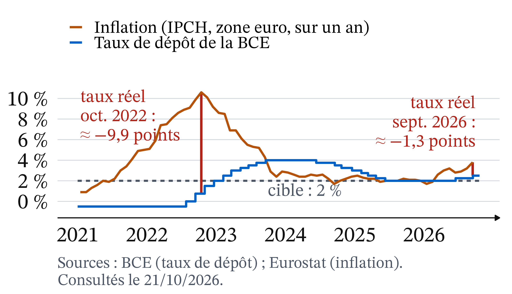
Pourquoi la BCE relève-t-elle ses taux ?
CM 7 · Partie II · La monnaie, l’État, le monde
ATER en économie, Université Clermont Auvergne
Le fait de départ : la fermeture du détroit d’Ormuz (28/02/2026)
- La guerre déclenchée le 28/02/2026 ferme de fait le détroit d’Ormuz (Insee, Note de conjoncture, 24/03/2026).
- Conséquence sur les prix : inflation de la zone euro à 3,8 % en septembre 2026, contre 2,2 % un an plus tôt ; l’énergie en apporte 1,7 point (Eurostat, 16/10/2026).
- Réaction de la BCE : taux de dépôt de 2,00 % à 2,25 % (17/06/2026), puis 2,50 % (16/09/2026) (BCE).
Question de la séance : pourquoi la BCE relève-t-elle ses taux face à un choc d’énergie ?
Le détroit d’Ormuz : un obstacle physique, et non monétaire
Carte : Goran tek-en, CC BY-SA 4.0, Wikimedia Commons (d’après OpenStreetMap).
- Tout le trafic maritime entre le golfe Persique et l’océan passe par ce passage étroit, entre l’Iran et Oman.
- L’obstacle est un passage bloqué : une hausse des taux ne le lève pas.
- La BCE ne produit pas de pétrole.
Le précédent de 2022 : 10,6 % d’inflation, dix hausses de taux
- Après l’invasion de l’Ukraine, l’inflation de la zone euro atteint 10,6 % en octobre 2022.
- La BCE relève alors ses taux dix fois, de juillet 2022 à septembre 2023 : le taux de dépôt passe de −0,50 % à 4,00 %.
Trois faits à expliquer, une question, deux outils
- La BCE ne produit pas de pétrole : relever un taux d’intérêt ne rouvre pas un détroit.
- En 2026, elle agit dès 3,2 % d’inflation (mai 2026) ; en 2022, à 8,6 % (juin 2022) (Eurostat).
- En 2026, elle relève son taux de 0,50 point ; en 2022-2023, de 4,50 points.
Question : pourquoi relever les taux face à un choc d’énergie, et pourquoi pas de la même façon en 2022 et en 2026 ? Deux outils : le taux d’intérêt réel et la règle de Taylor.
Rappel : inflation, grandeurs nominales et réelles, taux d’intérêt
- Inflation : hausse générale et durable des prix. On la mesure par la variation, sur un an, d’un indice des prix à la consommation.
- Nominal et réel : une grandeur nominale est mesurée en euros courants ; une grandeur réelle est corrigée de la hausse des prix et mesure ce que l’on peut acheter.
- Taux d’intérêt : prix du crédit, en pourcentage par an de la somme prêtée.
Rappel : création monétaire, choc d’offre, positif et normatif
- Création monétaire : les banques créent de la monnaie quand elles accordent des crédits ; la banque centrale fournit aux banques la monnaie dont elles ont besoin entre elles (CM 6).
- Choc d’offre : événement qui déplace la courbe d’offre (O → O′) ; un choc négatif fait monter le prix et baisser la quantité (CM 1).
- Positif et normatif : ce qui est (on peut le vérifier) et ce qui devrait être (cela dépend d’un jugement).
Théorie quantitative : trop de monnaie pour trop peu de biens
 1976 · UPI, domaine public, Wikimedia Commons
1976 · UPI, domaine public, Wikimedia Commons
Irving Fisher (1911), The Purchasing Power of Money ; Milton Friedman et Anna J. Schwartz (1963), A Monetary History of the United States, 1867-1960 · théorie quantitative, puis école monétariste. Si la quantité de monnaie augmente plus vite que la production, les prix finissent par monter.
Friedman et Schwartz l’illustrent sur près d’un siècle d’histoire américaine : les grands mouvements de la monnaie accompagnent ceux des prix.
L’équation des échanges de Fisher : M × V = P × T
\[M \times V = P \times T\]
- M : quantité de monnaie ; V : vitesse de circulation (combien de fois un euro sert dans l’année).
- P : niveau des prix ; T : volume des transactions (en gros, la production).
En taux de variation, et de façon approchée :
\[\Delta M + \Delta V \approx \Delta P + \Delta T \quad \text{(en \%)}\]
Théorie quantitative : un exemple chiffré
Hypothèses : la monnaie augmente de 10 % par an, sa vitesse ne change pas, la production augmente de 2 %.
- Variation de M : +10 % ; variation de V : 0.
- Variation de T : +2 %.
- Variation de P ≈ 10 + 0 − 2 = 8 % par an.
- Lecture : la monnaie qui croît plus vite que la production se retrouve dans les prix.
Théorie quantitative : elle explique la durée, pas le départ
- Appliquée à 2022 et 2026, elle n’explique pas le départ de la hausse, qui vient d’un choc d’offre sur l’énergie.
- Elle éclaire ce qui pourrait la faire durer.
- Le choc ne devient une inflation durable que s’il se diffuse aux autres prix et aux salaires.
- En rendant le crédit plus cher, la banque centrale freine la création de monnaie et la dépense.
IPCH et inflation hors énergie : définitions
Définition 1 (IPCH et inflation hors énergie) L’IPCH mesure les prix de la même façon dans tous les pays de l’Union européenne ; c’est celui que suit la BCE. L’inflation hors énergie retire les prix de l’énergie, mais garde l’alimentation : elle montre si la hausse s’est diffusée. L’inflation hors énergie et alimentation retire aussi l’alimentation, l’alcool et le tabac.
- L’Insee publie aussi l’IPC, propre à la France : en septembre 2026, 3,1 % selon l’IPC, 3,4 % selon l’IPCH (Insee, 15/10/2026).
Fisher (1930) : pour l’emprunteur, ce qui compte est le taux réel
1927 · Bain News Service, domaine public, Wikimedia Commons
Irving Fisher (1930), The Theory of Interest · école néoclassique. Le taux d’intérêt affiché (nominal) mélange deux choses : la rémunération du prêteur et la compensation de la hausse des prix.
Ce qui guide les décisions d’emprunt et d’épargne est le taux réel, à peu près égal au taux nominal moins l’inflation anticipée.
Taux d’intérêt réel et relation de Fisher : définition
Définition 2 (Taux d’intérêt réel et relation de Fisher) Le taux d’intérêt réel r mesure ce que rapporte vraiment un prêt, en pouvoir d’achat : \(r \approx i - \text{inflation anticipée}\), où i est le taux nominal. Avec l’inflation observée π, on obtient le taux réel ex post (« après coup ») : \(r \approx i - \pi\).
- Un taux réel négatif : le prêteur perd du pouvoir d’achat, l’emprunteur en gagne.
Taylor (1993) : relever le taux directeur plus que l’inflation
John B. Taylor (1993), « Discretion versus policy rules in practice », Carnegie-Rochester Conference Series on Public Policy, 39 · nouvelle synthèse. Une règle simple décrit bien la politique de la banque centrale des États-Unis de 1987 à 1992 : le taux directeur monte avec l’inflation et avec l’activité.
Quand l’inflation augmente de 1 point, le taux doit monter de plus de 1 point, pour que le taux réel augmente et freine la dépense.
Taux directeurs et points de base : définitions
Définition 3 (Taux directeurs et points de base) Les taux directeurs sont les trois taux que la BCE fixe pour les banques. La facilité de dépôt rémunère l’argent que les banques laissent chez elle au jour le jour ; le refinancement est le coût d’un prêt de la BCE à une semaine ; le prêt marginal, d’un prêt au jour le jour. Un point de base vaut un centième de point.
- Depuis le 16/09/2026 : 2,50 % (dépôt), 2,65 % (refinancement), 2,90 % (prêt marginal) (BCE, consulté le 22/10/2026).
Écart de production et cible d’inflation de la BCE
Définition 4 (Écart de production) L’écart de production est la différence, en pourcentage, entre la production effective et la production que l’économie peut réaliser sans tension sur les prix. Il est négatif en récession, positif en surchauffe. On ne l’observe pas directement : on l’estime.
- Cible de la BCE (stratégie de 2021, réaffirmée en juin 2025) : « viser une inflation de 2 % à moyen terme », avec un engagement « symétrique » : une inflation trop basse est aussi indésirable.
Exemple chiffré (1/2) : prêter à 4 % quand les prix montent de 10 %
Vous prêtez 10 000 € pour un an, au taux nominal i = 4 %.
- Ce que vous recevez : 10 000 × 1,04 = 10 400 €.
- Ce qu’il faudrait : si π = 10 %, 10 000 × 1,10 = 11 000 € pour acheter ce que 10 000 € achetaient.
- Le gain réel : il manque 11 000 − 10 400 = 600 €, soit 6 % de la somme prêtée : \(r \approx 4 - 10 =\) −6 %.
Exemple chiffré (2/2) : le même prêt avec 2 % d’inflation
- Avec π = 2 % : il vous faut 10 200 € ; vous en recevez 10 400. Vous gagnez 200 €, soit \(r \approx 4 - 2 =\) +2 %.
- Conclusion : le même taux nominal de 4 % avantage l’emprunteur quand l’inflation est de 10 %, le prêteur quand elle est de 2 %.
- La relation est approchée : le calcul exact donne −5,5 % au lieu de −6 %. L’écart est faible tant que les taux restent de quelques points.
Taux réel de la BCE (1/2) : l’écart entre taux et inflation
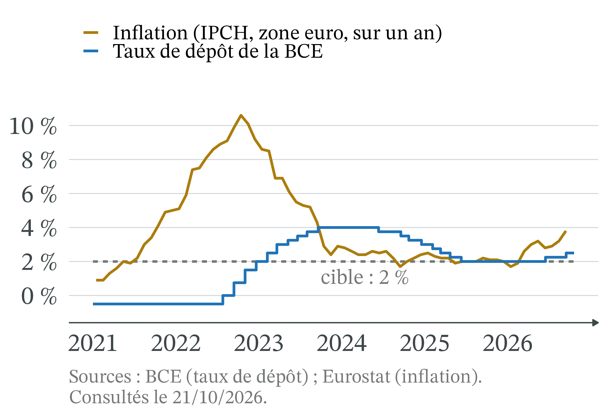
- Le taux réel ex post est l’écart vertical entre les deux courbes : \(r \approx i - \pi\).
- Inflation au-dessus du taux de dépôt : taux réel négatif.
- Taux de dépôt au-dessus : taux réel positif.
Taux réel de la BCE (2/2) : −9,9 % en octobre 2022

- Oct. 2022 : 0,75 − 10,6 ≈ −9,9 %, le plus bas.
- Oct. 2023 : 4,00 − 2,9 ≈ +1,1 %, quinze mois après la première hausse.
- Sept. 2026 : 2,50 − 3,8 ≈ −1,3 %.
Point d’attention : quel taux directeur, et quelle inflation
« Le taux directeur est passé de 0 % à 4 %. »
- Vrai pour le taux de refinancement : 0 % jusqu’en juillet 2022, 4 % en juin 2023.
- Faux pour le taux de dépôt : −0,50 %, puis 4 % en septembre 2023 (BCE).
- Il faut dire de quel taux on parle, et de quelle inflation (ensemble, hors énergie).
Transmission de la politique monétaire : cinq étapes
Quand la BCE relève ses taux :
- Les banques : se refinancer coûte plus cher ; elles relèvent les taux de leurs crédits.
- Ménages et entreprises : emprunter coûte plus, épargner rapporte plus ; on emprunte et on dépense moins.
- La monnaie : moins de crédits, c’est moins de monnaie créée.
- La demande : la dépense ralentit ; prix et salaires accélèrent moins.
- Les anticipations : si l’on croit au retour à 2 %, prix et salaires se fixent en conséquence.
Étape 1 : les banques répercutent la hausse, avec retard
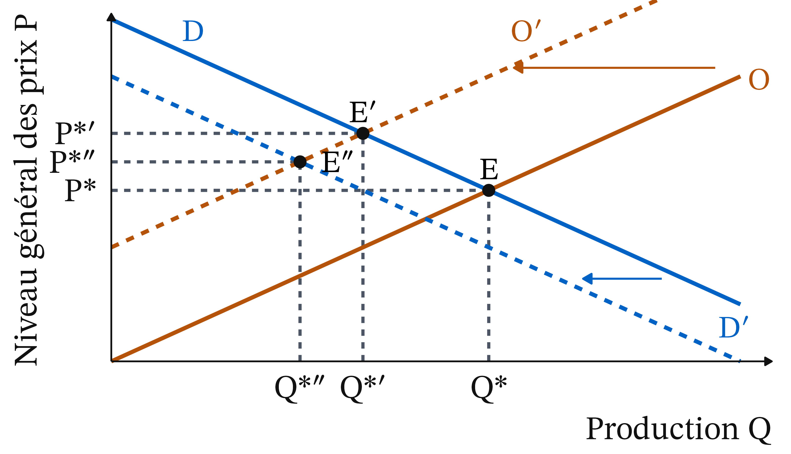
- Crédits à l’habitat, France : 1,1 % (déc. 2021), 3,6 % (déc. 2023), trois mois après la dernière hausse.
- Ils redescendent moins : 3,0 % (déc. 2025), avec un taux de dépôt à 2 % ; 3,2 % (août 2026).
Offre et demande agrégées (1/4) : l’équilibre initial E
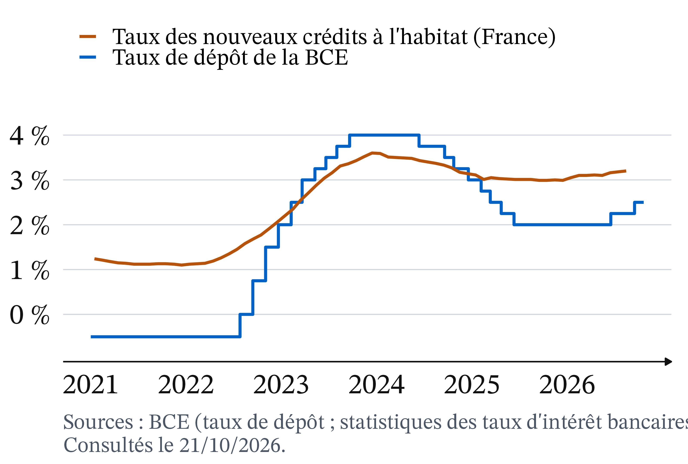
- Offre agrégée O : ce que les entreprises produisent.
- Demande agrégée D : ce que ménages, entreprises et État achètent ; elle baisse quand les prix montent.
- P : niveau général des prix ; Q : production totale.
Offre et demande agrégées (2/4) : le choc d’énergie déplace O vers O′
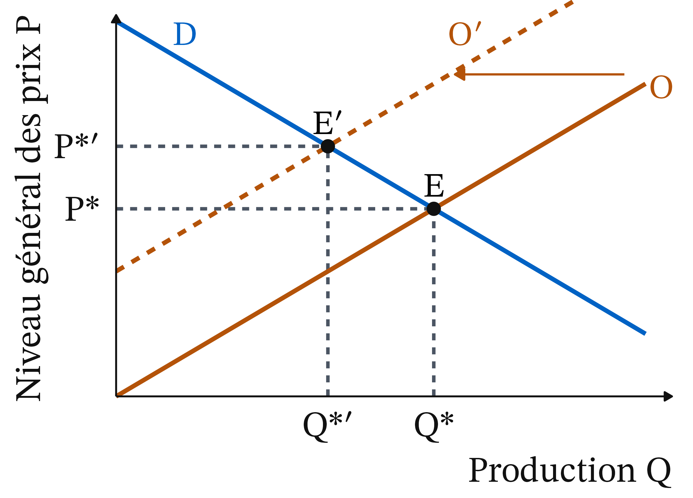
- Le choc : l’énergie renchérit, produire coûte plus cher ; l’offre passe de O à O′.
- Le résultat : l’économie passe de E à E′ ; les prix montent (P* → P*′), la production baisse (Q* → Q*′).
Offre et demande agrégées (3/4) : la hausse des taux, de D à D′

- La hausse des taux : la demande passe de D à D′.
- Le résultat : de E′ à E″ ; les prix montent moins (P*″ au lieu de P*′), mais la production baisse encore (Q*″).
Offre et demande agrégées (4/4) : le dilemme entre inflation et activité

- Choc d’offre : plus d’inflation (E′) ou moins d’activité (E″).
- Choc de demande : pas de dilemme ; freiner une demande qui s’emballe réduit à la fois l’inflation et la surchauffe.
Effets de second tour : le choc devient une inflation durable
Définition 5 (Effets de second tour) On parle d’effets de second tour quand une hausse de prix initiale (ici l’énergie) se diffuse aux autres prix et aux salaires : les entreprises répercutent leurs coûts, les salariés demandent des hausses pour compenser, ce qui relève encore les coûts.
- Le choc devient alors une inflation durable : c’est ce que la hausse des taux cherche à empêcher.
La BCE en septembre 2026 : risque de diffusion, salaires calmes
Déclaration de politique monétaire du 10/09/2026 (BCE, notre traduction) :
- « plus les prix de l’énergie restent élevés, plus ils risquent de faire monter l’inflation au-delà » de l’énergie ;
- « à ce stade », les salaires ne réagissent pas de façon notable au choc ;
- la plupart des mesures des anticipations d’inflation à long terme se situent « autour de 2 % », même si les anticipations à court terme restent élevées.
Règle de Taylor : la formule et ses quatre termes
\[i = 2\ \% + \pi + 0{,}5 \times (\pi - 2\ \%) + 0{,}5 \times \text{écart de production}\]
- 2 % : le taux réel « normal » retenu par Taylor ;
- π : compense l’inflation ;
- 0,5 × (π − 2 %) : corrige l’écart à la cible de 2 % ;
- 0,5 × écart de production : tient compte de l’activité.
Avec un écart de production nul : \(i = 1 + 1{,}5 \times \pi\).
Règle de Taylor (1/3) : la règle et la droite du taux réel nul
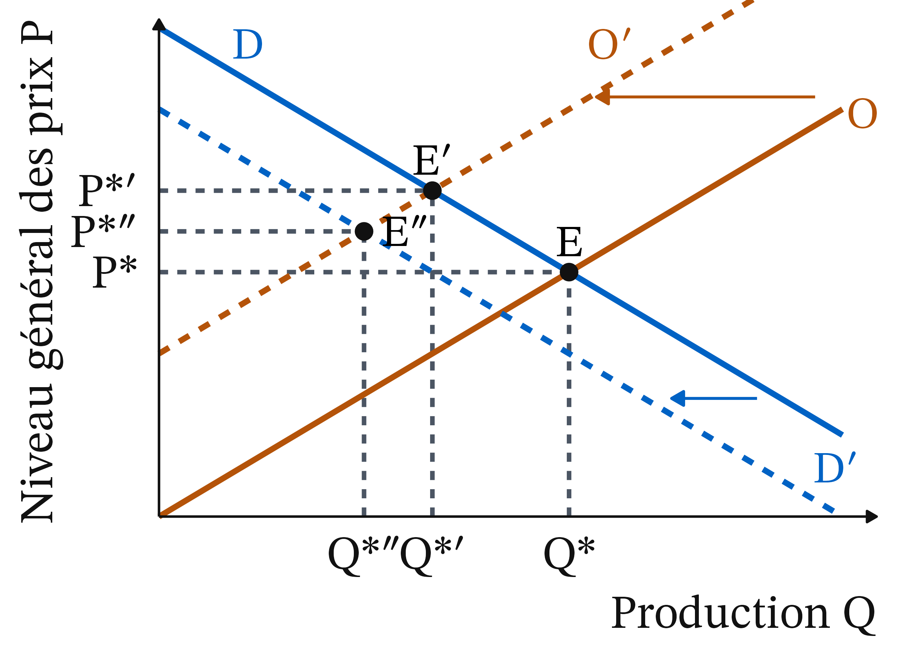
- Droite pointillée : i = π, taux réel nul.
- Au-dessus, le taux réel est positif ; au-dessous, négatif.
- La règle monte plus vite (pente 1,5) : plus l’inflation est forte, plus le taux réel conseillé est élevé.
Exemple chiffré : la règle quand l’inflation passe de 2 % à 4 %
Écart de production nul.
- π = 2 % : i = 2 + 2 + 0,5 × (2 − 2) + 0 = 4 % ; taux réel 4 − 2 = 2 %, le taux « normal ».
- π = 4 % : i = 2 + 4 + 0,5 × (4 − 2) + 0 = 7 %.
- Comparaison : inflation +2 points, taux +3 points ; taux réel de 2 % à 7 − 4 = 3 % : la politique devient plus restrictive.
- Récession (écart −2 %) : on retire 0,5 × 2 = 1 point, i = 6 %.
Règle de Taylor (2/3) : les deux points de l’exemple
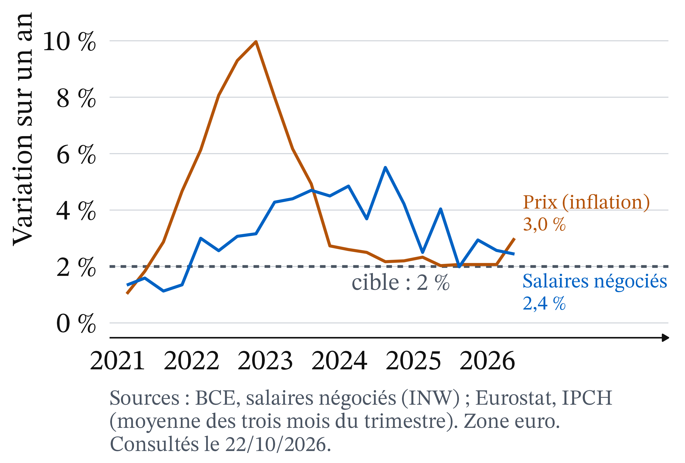
- 2 % d’inflation : taux de 4 %.
- 4 % d’inflation : taux de 7 %.
- L’inflation monte de 2 points, le taux de 3 points : on s’éloigne de la droite pointillée, le taux réel monte.
Règle de Taylor (3/3) : la BCE sous la droite du taux réel nul
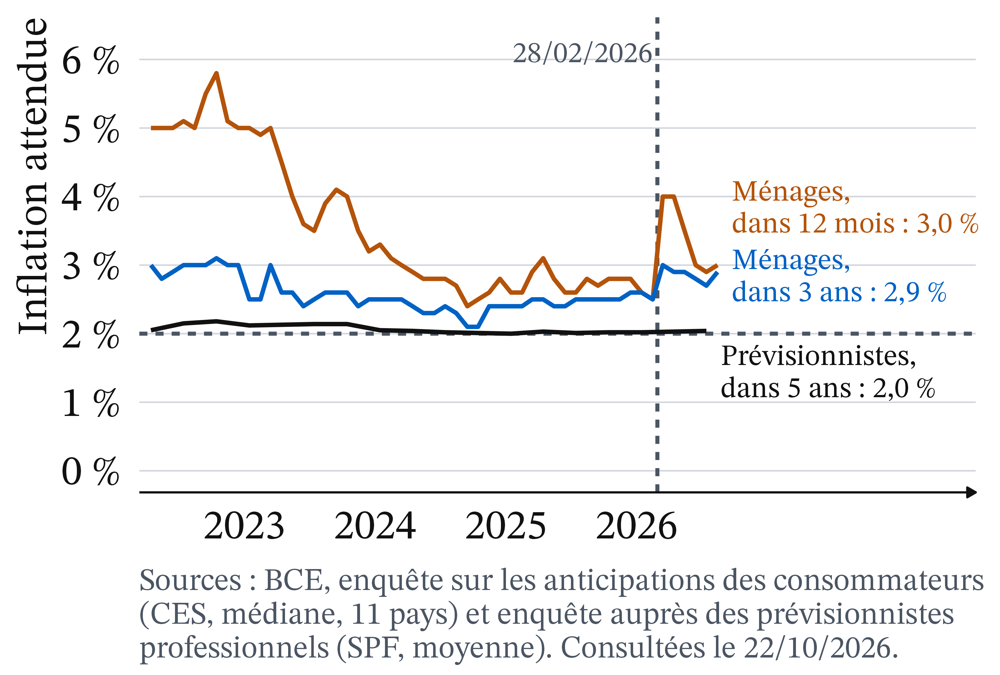
- Oct. 2022 : inflation 10,6 %, taux de dépôt 0,75 %.
- Sept. 2026 : inflation 3,8 %, taux de dépôt 2,50 %.
- Les deux points sont au-dessous de la droite pointillée : taux réel négatif.
La règle appliquée à 2022 et 2026 : un repère, pas une prescription
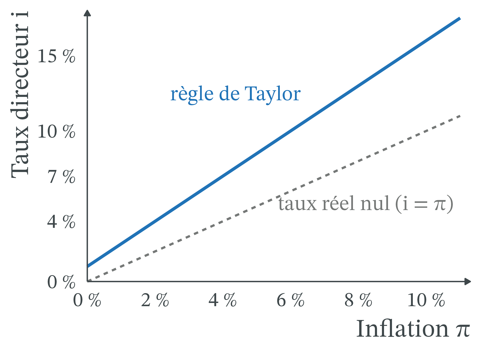
- Oct. 2022 : 1 + 1,5 × 10,6 ≈ 17 % ; hors énergie (≈ 7 %) : 11,5 %. Taux de dépôt : 0,75 %.
- Sept. 2026 : ≈ 6,7 % ; hors énergie (2,3 %) : 4,5 %. Taux de dépôt : 2,50 %.
Les limites de la règle : trois hypothèses fortes
- Un taux réel « normal » de 2 %, calculé par Taylor pour les États-Unis.
- Un écart de production nul, alors qu’une croissance faible (0,9 % prévus en 2026 par la BCE, 10/09/2026) peut creuser un écart négatif.
- Le choix de l’inflation : totale ou hors énergie.
- Surtout, la règle ne distingue pas l’origine de l’inflation : elle réagit de la même façon à un choc d’offre et à un choc de demande.
2022-2023 et 2026 : deux chocs d’énergie, deux réponses
| 2022-2023 | 2026 | |
|---|---|---|
| Première décision de hausse | 21/07/2022 | 11/06/2026 |
| Inflation du mois précédent | 8,6 % (juin) | 3,2 % (mai) |
| Énergie, sur un an | 41,5 % (oct.) | 18,9 % (sept.) |
| Hors énergie | 6,9 % (oct.) | 2,3 % (sept.) |
| Hors énergie et alimentation | 5,0 % (oct.) | 2,5 % (sept.) |
| Taux de dépôt | −0,50 % → 4,00 %, 10 hausses | 2,00 % → 2,50 %, 2 hausses |
Sources : BCE (décisions et taux) ; Eurostat, prc_hicp_minr (consulté le 21/10/2026).
Diffusion de l’inflation (1/2) : l’inflation d’ensemble, 2021-2026
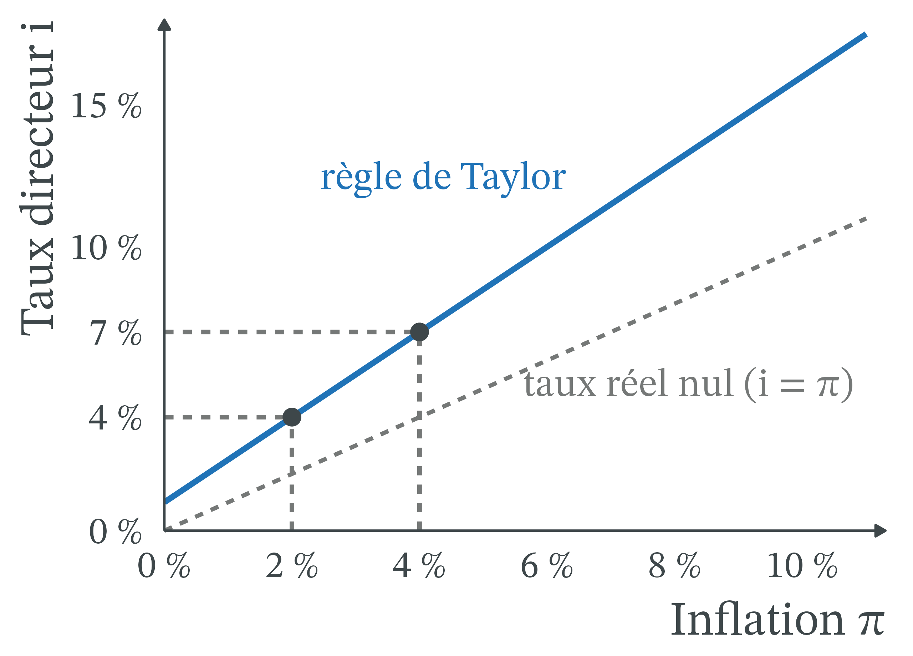
- L’inflation d’ensemble culmine à 10,6 % en octobre 2022.
- Elle remonte à 3,8 % en septembre 2026.
- Cette courbe seule ne dit pas si le choc d’énergie s’est diffusé au reste des prix.
Diffusion de l’inflation (2/2) : en 2022, pas en 2026
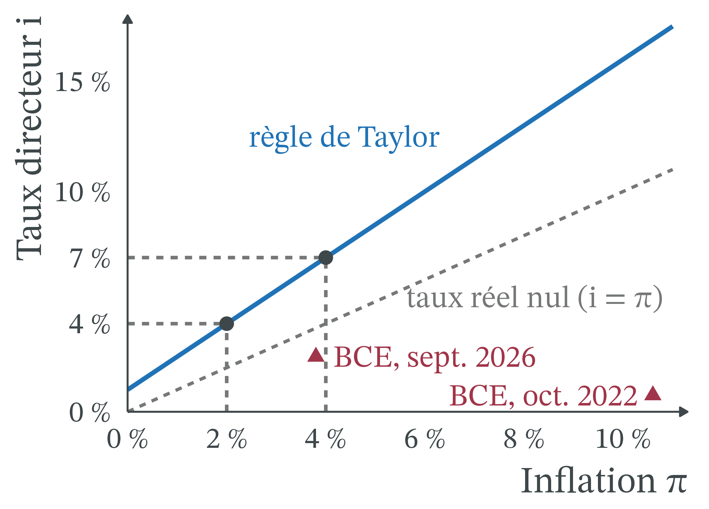
- Hors énergie et alimentation, l’inflation culmine cinq mois plus tard : 5,7 % en mars 2023. Le choc a gagné le reste des prix.
- En 2026, la courbe d’ensemble remonte seule : 2,2 % à 2,6 % hors énergie et alimentation.
En 2026, la BCE agit plus tôt et reste prudente
- Plus tôt : sa réaction de 2022 avait été « jugée tardive » (AFP, La Libre, 11/06/2026). Agir tôt et peu vise les anticipations (étape 5) : montrer que la cible de 2 % tient avant que les salaires ne s’ajustent.
- Prudente : le 10/09/2026, elle prévoit une inflation de 3,0 % (2026), 2,5 % (2027), 2,1 % (2028), et décide « réunion par réunion », sans s’engager sur une trajectoire de taux.
- Elle arbitre entre deux risques : plus d’inflation si elle attend, moins d’activité si elle monte fort.
France et Allemagne : un écart d’inflation refermé en 2026
- Octobre 2022 : inflation (IPCH) de 11,6 % en Allemagne, contre 7,1 % en France (Eurostat).
- Le bouclier tarifaire a divisé par deux l’effet de l’énergie en France : de mi-2021 à mi-2022, 5,3 % d’inflation, contre 8,4 % sans bouclier (Insee Analyses n° 75, 01/09/2022).
- Septembre 2026 : 3,4 % en France, 3,3 % en Allemagne (Eurostat, 16/10/2026).
Effets de répartition par revenu : énergie et épargne réglementée
- Énergie : de mi-2021 à mi-2022, même avec le bouclier, +3,3 points d’inflation pour les 10 % les plus modestes, +2,7 pour les 10 % les plus aisés (Insee Analyses n° 75).
- Épargne : la hausse des taux rémunère celle des ménages qui en ont ; les 30 % les moins dotés possèdent moins de 40 000 €, presque uniquement en livrets réglementés (Picault et Burietz, The Conversation, 04/10/2026).
- Livret A : 1,7 % depuis le 01/08/2026, soit un taux réel ≈ 1,7 − 3,1 = −1,4 %.
Emprunteurs, prêteurs et générations : les nouveaux emprunteurs paient
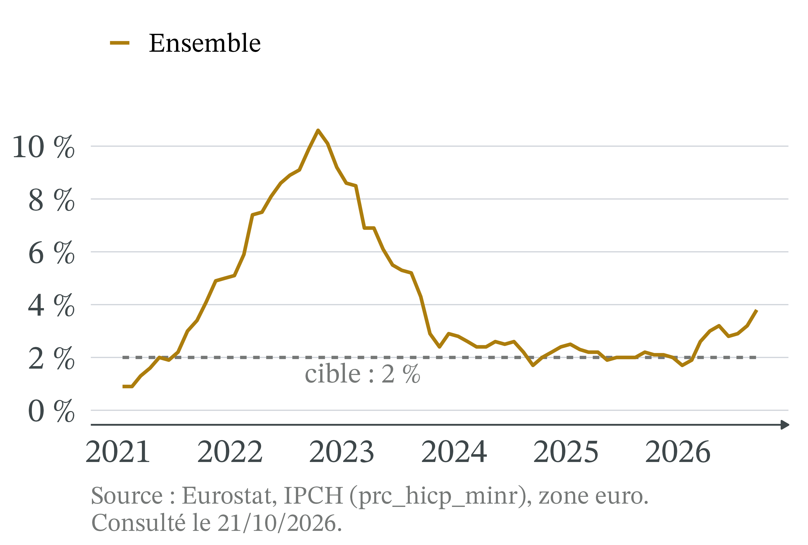
- Inflation surprise : l’emprunteur à taux fixe gagne, son prêteur perd.
- Hausse des taux : les nouveaux emprunteurs paient ; entreprises françaises, 1,08 % (juil. 2021), 4,42 % (juil. 2023).
- Un jeune ménage paie le nouveau taux.
Effets par territoire : un seul taux pour vingt et un pays
Depuis l’entrée de la Bulgarie (01/01/2026), 21 pays (Eurostat). Taux réel ex post en septembre 2026, avec un taux de dépôt de 2,50 % :
- Espagne : 2,50 − 5,0 = −2,5 % ;
- Italie : −1,7 % (4,2 % d’inflation) ;
- France : −0,9 % (3,4 %) ; Allemagne : −0,8 % (3,3 %).
- La même décision freine moins les pays où l’inflation est la plus forte : c’est le prix d’une monnaie unique.
Controverse : relever les taux face à un choc d’énergie
Analyse positive (ce qui est : mécanismes et effets, vérifiables)
- La hausse des taux agit sur la demande et les anticipations, pas sur l’énergie : moins d’inflation, moins d’activité.
- 2022 : taux réel très négatif plus d’un an, inflation diffusée ; 2026 : hors énergie proche de 2 %.
Analyse normative (ce qui devrait être : dépend de jugements de valeur)
- Combien d’emplois perdre pour revenir à 2 % un an plus tôt ? Qui paie : emprunteurs ou contribuables ? Qui décide : une institution non élue ?
Controverse : monétaristes et keynésiens, même mécanisme, autre outil
- Monétaristes (Friedman) et nouvelle synthèse (Taylor) : l’inflation durable est monétaire ; la banque centrale doit être crue. Attendre est dangereux : si les anticipations décrochent, il faudra monter les taux beaucoup plus haut.
- Keynésiens : une inflation venue de l’énergie ne se combat pas par la demande ; relever les taux ajoute une récession au choc. Mieux vaut des aides budgétaires ciblées.
- Les deux écoles admettent le mécanisme ; elles divergent sur le risque de diffusion, le coût d’une récession et le meilleur outil.
Et le droit ? Stabilité des prix et indépendance de la BCE
L’objectif principal de la BCE, la stabilité des prix, et son indépendance sont fixés par le traité sur le fonctionnement de l’Union européenne (art. 127 et 130) : la BCE ne peut « solliciter ni accepter des instructions » des institutions européennes ou des gouvernements.
- Les taux sont décidés par le Conseil des gouverneurs : les six membres du directoire et les gouverneurs des banques centrales nationales.
- Changer ce mandat suppose de réviser les traités : aucun gouvernement ne peut le faire seul.
À retenir
- Une inflation durable suppose que la monnaie augmente plus vite que la production (théorie quantitative).
- Ce qui guide l’emprunt et l’épargne est le taux réel : r ≈ i − π (relation de Fisher).
- Pour freiner l’inflation, le taux doit monter plus que l’inflation (règle de Taylor).
- Face à un choc d’offre, la hausse des taux réduit l’inflation au prix d’une activité plus faible.
- BCE : +4,50 points en 2022-2023, après la diffusion ; +0,50 point en 2026, tôt.
- Choisir entre inflation et activité relève d’un jugement normatif.
Plan de dissertation : ce que disent les outils, ce qu’ils ne tranchent pas
Sujet : la BCE doit-elle relever ses taux face à un choc d’énergie ?
I. Ce que disent les outils (positif)
- A. Taux réel (Fisher) et règle de Taylor : le taux doit monter plus que l’inflation.
- B. Transmission : la hausse freine la demande, pas l’offre ; elle limite la diffusion.
II. Ce qu’ils ne tranchent pas (normatif)
- A. L’origine du choc et le coût en activité et en emplois.
- B. Qui porte le coût, et qui décide : une institution non élue.
CM 7 · BCE